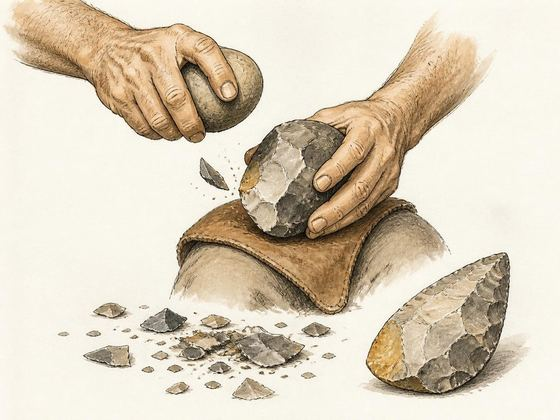

Heritage walk · On request
Bhimbetka: Painted Shelters and Prehistoric Landscapes
A three-hour heritage walk in Bhimbetka, Madhya Pradesh
Everything we offer / Workshop

A hands-on workshop on how prehistoric stone tools were made, used and classified
On request
Arranged for your group. Send your preferred dates, group size and location. We adapt the length, level and language, and prepare a quotation. The suggested group size is a guide, not a requirement.
No payment is taken until you approve the plan. Common questions
A prehistorian demonstrates how stone tools were struck and what the scars on them reveal. Participants sort tool types, handle replicas and learn the first steps of lithic analysis.
All materials are provided. The session is adapted to your space, your timetable and the age of the participants.
Knapping sequence 35 min
Core, flake, platform and percussion terms.
You: sequence cards
Replica lab 80 min
Sort safe replicas by observed features.
You: typology grid
Interpretive limits 35 min
Technology does not map directly to identity.
You: lab reflection
Timings are a guide. The plan is confirmed with your quotation.
An activity sheet to keep.
Heritage walk · On request
A three-hour heritage walk in Bhimbetka, Madhya Pradesh
Lecture · On request
A 90-minute lecture, online or at your venue
Workshop · On request
A three-hour workshop, online, then a neighbourhood near you
Lecture · On request
An illustrated lecture on tangible and intangible heritage, and on who protects it